Ejercicios interactivos de límite de una sucesión
Elige la opción correcta:
1La sucesión an = (3.5 − 0.5n) ...
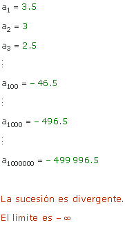
2La sucesión 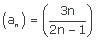 ...
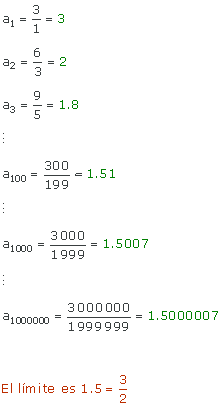
3La sucesión 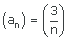 ...
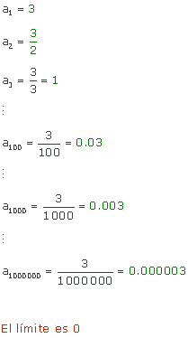
4La sucesión 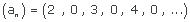 ...
Los términos de esta sucesión alternan de mayor a menor y viceveresa, con lo que la sucesión no es convergente ni divergente. Este tipo de sucesiones se llama oscilante.
Elige la opción correcta:
5La sucesión an = (2, 5, 8, 11, 14, )...
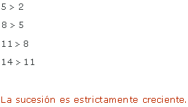
6La sucesión (bn) = (5, 4, 3, 3, 2, 1, 0, 0, ...) ...
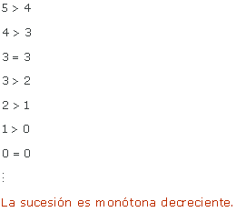
7La sucesión (bn) = (20, 10, 5, 2.5, 1.25, ...) ...
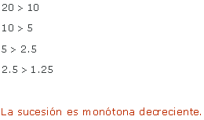
8La sucesión an = (2, 4, 3, 5, 4, 6, )...
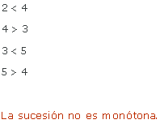
9La sucesión an = (1, 1, 2, 3, 4, 4, 5, ...) ...
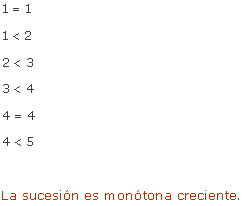
10La sucesión  ...
...
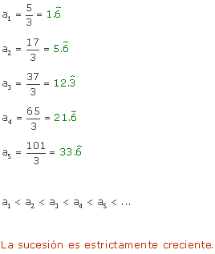
Elige la opción más correcta:
11La sucesión (an) = (1, 3, 5, 7, ...) ...
Se trata de una sucesión estrictamente creciente, por lo que no puede estar acotada superiormente. Por ser creciente, el primer término de la sucesión será menor que todos los demás, luego la sucesión está acotada inferiormente y su cota ínfimo (y mínimo a la vez) es 1.
12La sucesión (an) = (−1, 1, −1, 1, ...) ...
Se trata de una sucesión oscilante, donde 1 es una cota superior y −1 es una cota inferior, por tanto, la sucesión está acotada inferior y superiormente, es decir, está acotada.
13La sucesión ...
La sucesión es (an) = (3, 1.5, 1, 0.75, ...), que es decreciente. Todos los términos son menores o iguales que 3 y mayores que 0, por lo que está acotada inferiormente por 0 y superiormente por 3.
14La sucesión ...
Podemos observar que todos los términos son superiores a cero, por lo que la sucesión está acotada inferiormente y 0 es una cota inferior.
Elige la opción más correcta:
15La sucesión 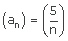 ...
La sucesión está acotada, pues está acotada superior e inferiormente. Su supremo (y también máximo) es 5 y su ínfimo es 0. Además es decreciente.
Toda sucesión decreciente y acotada inferiormente es convergente y su límite es igual al ínfimo de la sucesión, con lo que tiende a su ínfimo, es decir, tiende a 0.
16La sucesión 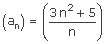 ...
La sucesión es estrictamente creciente y aunque está acotada inferiormente y su ínfimo (y mínimo) es 8, no está acotada superiormente. Por otra parte, es fácil comprobar que es divergente y tiende a +∞, es decir, no es convergente.
Luego las tres primeras respuestas son correctas.
17La sucesión  ...
...
La sucesión está acotada, pues lo está superior e inferiormente. Su supremo (y máximo) es 5.5 y su ínfimo es 0. Además es decreciente.
Toda sucesión decreciente y acotada inferiormente es convergente y su límite es igual al ínfimo de la sucesión, con lo que  tiende a su ínfimo, es decir, tiende a 0.
tiende a su ínfimo, es decir, tiende a 0.
Luego, las tres primeras respuestas son correctas.
18La sucesión (an) = (4n + 7) ...
La sucesión es estrictamente creciente y no está acotada superiormente. Está acotada inferiormente y su ínfimo (y mínimo) es 11. Además esta sucesión es divergente, su límite es +∞.
19La sucesión (an) = (8, 4, 2, 1, 0.5, ...) ...
La sucesión está acotada, pues lo está superior e inferiormente. Su supremo (y también máximo) es 8 y su ínfimo es 0, luego la opción correcta es está acotada inferiormente y su ínfimo es 0.
Además es decreciente. Toda sucesión decreciente y acotada inferiormente es convergente y su límite es igual al ínfimo de la sucesión, con lo que (an) = (8, 4, 2, 1, 0.5, ...) tiende a su ínfimo, es decir, tiende a 0.
20La sucesión 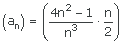 ...
La sucesión es 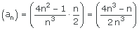
Está acotada, pues lo está superior e inferiormente. Su ínfimo (y mínimo) es 1.5 y su supremo es 2. Además es creciente.
Toda sucesión creciente y acotada superiormente es convergente y su límite es igual al supremo de la sucesión, con lo que nuestra sucesión tiende a su supremo, es decir, tiende a 2.
Por tanto, la opción correcta es la tercera: es creciente, acotada superiormente, con supremo 2 y converge a 2.
Si tienes dudas puedes consultar la teoría